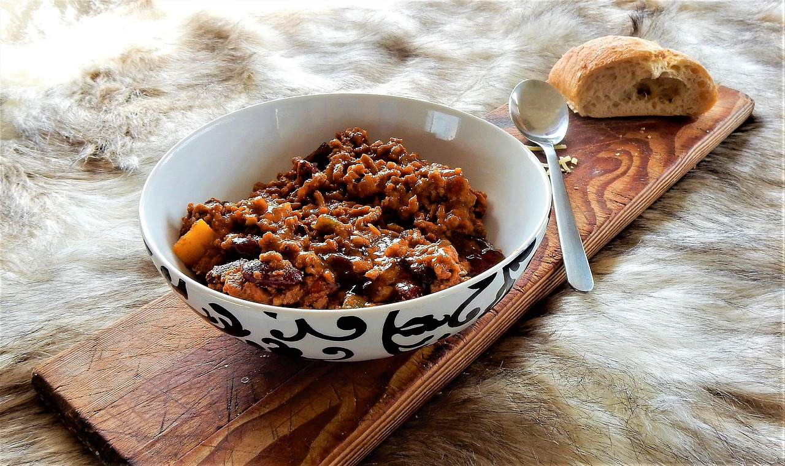

Texas Sheet Cake

What does this mean to my family?
This is a recipe that has been in the family for a while
and is a favorite of mine. I love how everything is so soft but also tastes
so delicious. This recipe is great in a potato, on some fritos, or even by itself.
I think this is a great recipe if you are feeding a lot of people because my family of
four always has leftovers. I hope you enjoy this recipe as much as my family does!
We've got to keep it simple because I get distracted. Five Ingredients or less is important.
--Allyson(my grandma)
Ingredients
- 1 chopped onion
- 1 lb ground beef
- 1 tsp chili powder
- 1 can of black beans with liquid
- 1 can of black beans, drained and squashed
- 1 large can (28 oz) tomato sauce
- 1 cup salsa
Cooking Instructions
- In a large pot, start by frying the onions with a little olive oil.
- Add ground beef and cook until browned.
- Add all other Ingredients (chili powder, black beans, tomato sauce, and salsa).
- Let simmer until there is bubbles coming from the bottom.
- Garnish with cheese, sour cream, avocados, etc.(optional)
I reccomend chili with fritos, sour cream, avocados, and a drink.
Back to Recipes